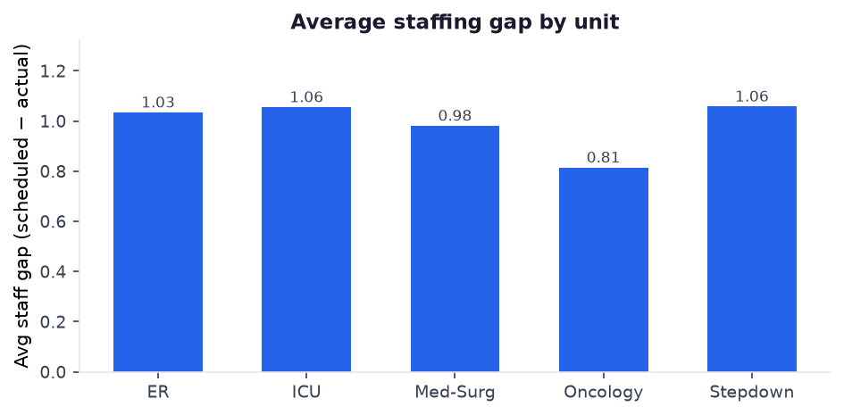
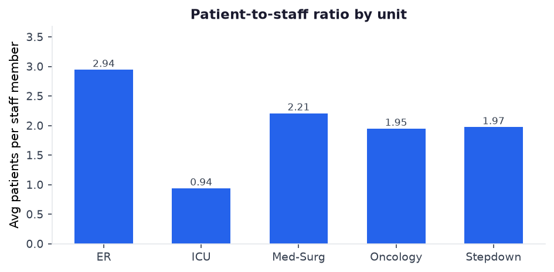
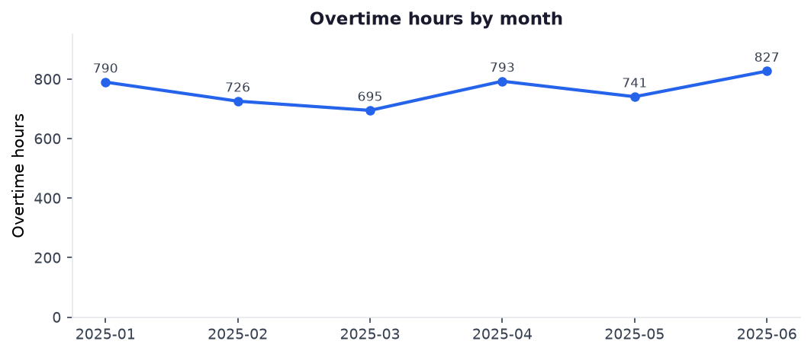
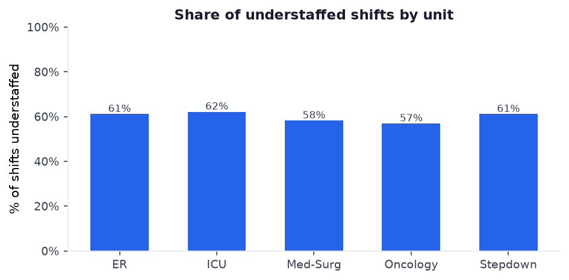
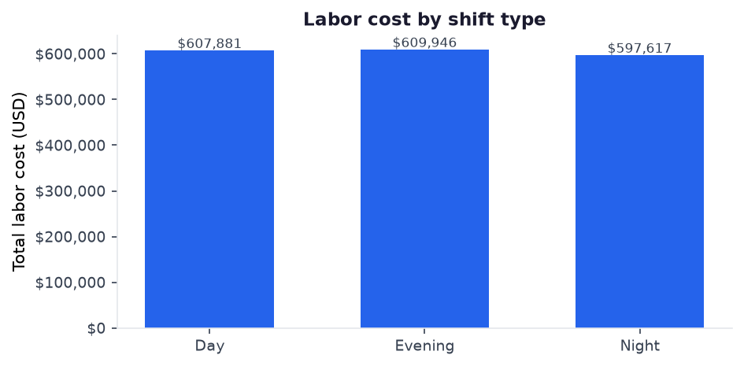

Hospital units regularly run short-staffed, forcing overtime, agency labor, and higher patient-to-staff ratios. The operations team needed to quantify where and when staffing gaps occur, which units are most affected, and what the labor cost impact is — so leadership can set staffing targets and budget for overtime and agency spend.
Synthetic shift-level dataset built to mirror real hospital staffing patterns: 1,890 shifts across 5 units (ICU, Med-Surg, ER, Stepdown, Oncology) over 6 months (Jan–Jun 2025). Each row records scheduled vs. actual staff, patient census, overtime hours, agency staff usage, and labor cost.
Synthetic data generated for demonstration. Column definitions and generation logic are in the linked analysis script; replace with real (de-identified) data for production use.


Analysis performed in SQL (aggregation by unit, shift type, and month) and Python (gap calculation, patient-to-staff ratio, understaffed share). No modeling — this is descriptive operations analytics focused on variance between planned and actual staffing.
Staffing gap = scheduled − actual. A shift is flagged "understaffed" when actual staff is below scheduled.
Across all units, 59.9% of shifts ran understaffed, with an average gap of 2.0 staff when short. Overtime totaled 4,572 hours over six months, with 305 shifts requiring agency staff. Total labor cost: $1.8M.
ER had the highest patient-to-staff ratio (2.94) and the most agency shifts (78). ICU logged the most overtime (979 hrs). Evening shifts carried the highest overtime load (1,572 hrs) and cost ($609,946).



| Unit | Shifts | Avg gap | Avg patient-to-staff | OT (hrs) | Agency | Labor cost |
|---|---|---|---|---|---|---|
| Med-Surg | 378 | 0.98 | 2.21 | 793 | 62 | $397,623 |
| ER | 378 | 1.03 | 2.94 | 935 | 78 | $389,577 |
| ICU | 378 | 1.06 | 0.94 | 979 | 64 | $368,625 |
| Stepdown | 378 | 1.06 | 1.97 | 911 | 52 | $339,149 |
| Oncology | 378 | 0.81 | 1.95 | 954 | 49 | $320,470 |
This is a synthetic dataset generated to mirror staffing patterns, not real hospital data. Findings are directional and should be validated against actual scheduling and HR system data before operational decisions are made. Agency cost and OT rates are simplified estimates.